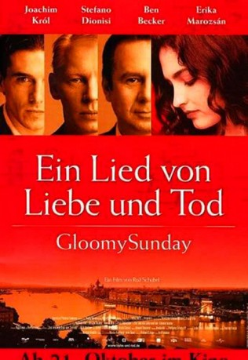
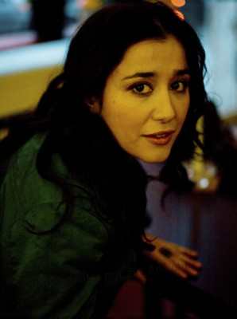
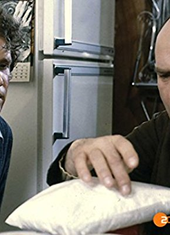

#5574 Ein Lied von Liebe und Tod - Gloomy Sunday
Alternativ: Gloomy Sunday (Englischer Titel)
 
 IMDB-Wertung: 7.9 / 10
IMDB-Wertung: 7.9 / 10  Metascore: 0
Metascore: 0 
Ein Lied von Liebe und Tod – Gloomy Sunday ist ein deutsch-ungarischer Spielfilm aus dem Jahr 1999, der nach der Vorlage des Romans Lied vom traurigen Sonntag von Nick Barkow unter der Regie von Rolf Schübel gedreht wurde
Jahr: 1999
Dauer: 55 Minuten
FSK: 12
Land: Deutschland Studio: PolyGramTonspuren:
Untertitel:
Auflösung: SD (640x336) Größe: 700 MB
Genre: Drama, Liebe
Regisseur: Rolf Schübel
Drehbuch: Jason Momoa
Soundtrack:
Darsteller:
- Erika Marozsán als Ilona
 Ben Becker als Hans Wieck
Ben Becker als Hans Wieck- Stefano Dionisi als András
- Rolf Becker als Herr Wieck
 Karl Fischer als Herr Svoboda
Karl Fischer als Herr Svoboda- Wanja Mues als Herr Mendel
-  Dorka Gryllus als Fräulein Mendel
 Sebastian Koch als Obersturmbannführer Eichbaum
Sebastian Koch als Obersturmbannführer Eichbaum- Ulrike Grote als Frau Häberle
- László I. Kish als Standartenführer Schnefke
- Stefan Weinert als SS-Offizier
 Adolf Hitler als Himself , archive footage, uncredited
Adolf Hitler als Himself , archive footage, uncredited Joachim Król als László
Joachim Król als László- András Bálint als Ilonas Sohn
- Géza Boros als Geigenspieler
- Ilse Zielstorff als Frau Wieck
- Ferenc Bács als Botschafter
- Júlia Zsolnai als Frau des Botschafters
- Áron Sipos als Arzt
- Ernst Kahl als Zeichner Torresz
- Jörg Gillner als Chefkoch István
 Denis Moschitto als Lehrling Inas
Denis Moschitto als Lehrling Inas- István Mikó als Kartoffelhändler
- Michael Gampe als Direktor Novak
- Markus Hering als Herr Schwitz
- Werner Brehm als Postbote
- Tibor Kenderesi als Professor Tajtelbaum
- Anna Ráckevei als Tajtelbaums Nichte
- István Kanizsay als Journalist im Café
- Michael Quitkowsky als Wochenschausprecher
- Veit Stübner als Weinlieferant
- Márta Bakó als Kerzenverkäuferin
- Ferenc Némethy als Alter Jude in Wiecks Büro
- Zsuzsa Mányai als Lászlós Nachbarin
- Aurel Haitó als Reporter I
- György Kégl als Reporter II
- Árpád Hetényi als Reporter III
- Tanya M. Nagel als BBC-Reporterin
-  Friedrich G. Beckhaus als Professor Tajtelbaum , uncredited
- Angelo Michele Franke als Ungarischer Soldat , uncredited
- Oliver Rohrbeck als Radiosprecher , uncredited
Datei: X:\1999\Lied von Liebe und Tod - Gloomy Sunday, Ein (1999, FSK12, 640x336) - CD1.avi seit 17.02.2017
Festplatte: HD 1996-2002
 Es gibt insgesamt 81 Filme in der Gruppe '1999'
Es gibt insgesamt 81 Filme in der Gruppe '1999'